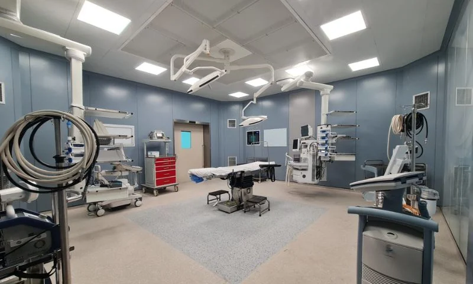
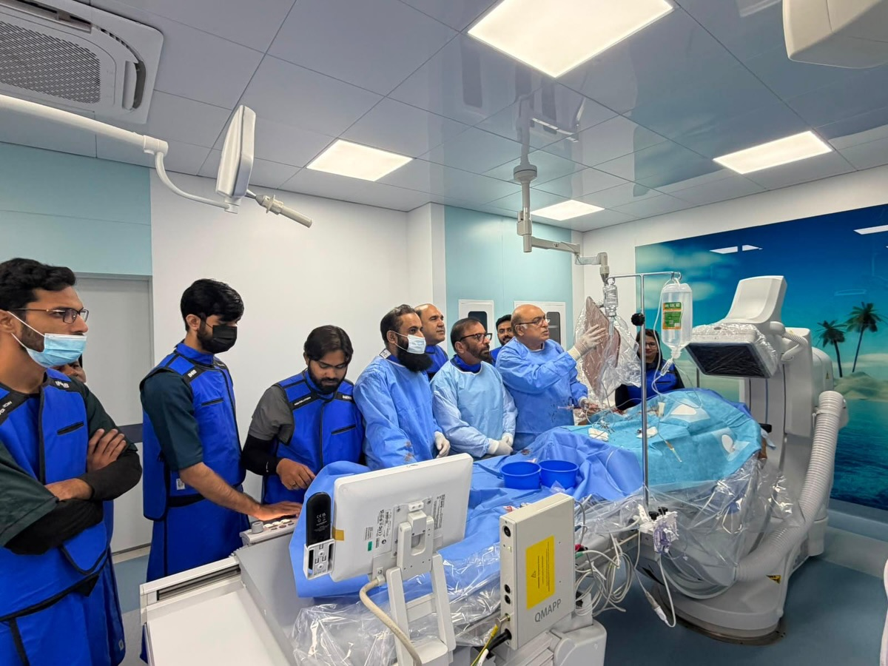

Find specialists, cardiologists, and cardiac surgeons.
Browse FacultyTo become a center of international repute in cardiovascular treatment, research, and education, delivering equitable and state-of-the-art care to patients across Punjab and Pakistan.
To provide compassionate, accessible, and high-quality cardiac healthcare while nurturing future healthcare professionals through cutting-edge education, clinical training, and clinical research.
Dean, Jinnah Institute of Cardiology
MBBS, FCPS, FACC, FSCAIWelcome to Jinnah Institute of Cardiology, a center committed to excellence in cardiac patient care, medical education, and innovative cardiovascular research.
Our mission is to provide compassionate, accessible, and state-of-the-art healthcare while developing healthcare professionals through quality clinical education and training. We are dedicated to advancing cardiac services and adopting modern medical practices to continuously improve patient outcomes.
With a strong commitment to professionalism, innovation, and patient-centered care, we look forward to building a healthier future for our community across Punjab.
Eleven specialized units spanning from prevention to advanced heart transplants.
24/7 dedicated acute cardiac emergency care equipped with modern resuscitation protocols.
Daily specialist consultations, diagnostic screening, and follow-up clinics.
Coronary angiography, primary PCI, complex stenting, and structural interventions.
Echocardiography (2D/3D/TEE), ETT, Holter monitoring, and vascular Doppler.
Diagnosis of cardiac arrhythmias, RF ablation, and pacemaker/ICD implants.
Pakistan's premier state-of-the-art heart transplant and advanced heart failure facility.
Risk factor management, hypertension, lipid clinics, and cardiac rehabilitation.
CABG (bypass surgery), valve replacements, and aortic root reconstructions.
Keyhole heart surgery reducing hospital stay and faster patient recovery.
High-dependency intensive cardiac monitoring units staffed 24/7 by intensivists.
Cardiac CT Angiography, Cardiac MRI, Digital X-Ray, and Ultrasound services.
Specialized care and interventional support for congenital heart defect patients.
Cardiology, Cardiac Surgery, Anesthesia, & Critical Care Medicine.
Pathology Lab, Radiology, Cardiac Catheterization Labs, Echocardiography.
Specialized cardiac nursing care, OT techniques, and patient education.
IT Wing, Medical Records, Finance, Pharmacy, and Bio-Medical Dept.
A major milestone achieved in public cardiovascular healthcare infrastructure for the people of Punjab.
Read More
InaugurationState-of-the-art facility equipped for complex end-stage heart failure surgical management.
Read More
Clinical MilestoneFirst Coronary Angiography performed successfully at Jinnah Institute of Cardiology (JIC), Lahore, Punjab, Pakistan.
Read MoreApplications invited for various medical, nursing, and allied health positions offering career opportunities at JIC Lahore.
Induction for FCPS fellowship programs in Interventional Cardiology and Cardiac Surgery now open.
To facilitate maximum public care, morning OPD registration counters now open at 08:00 AM daily.